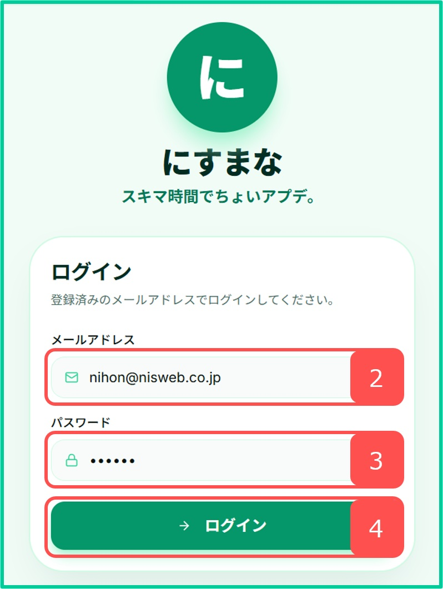
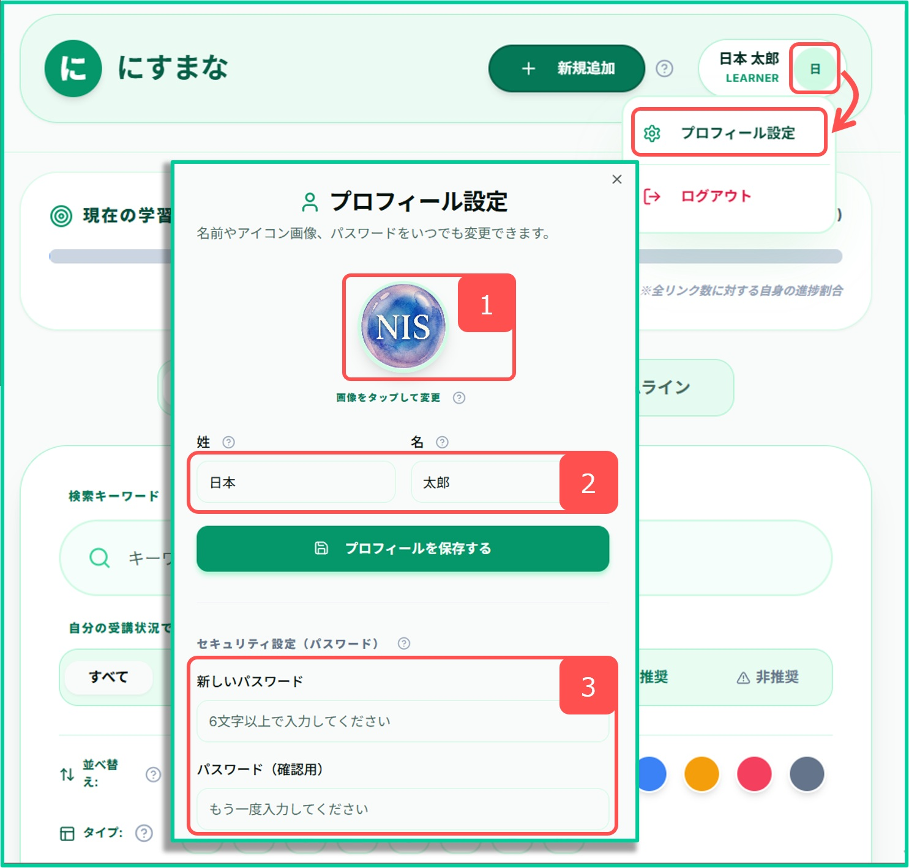
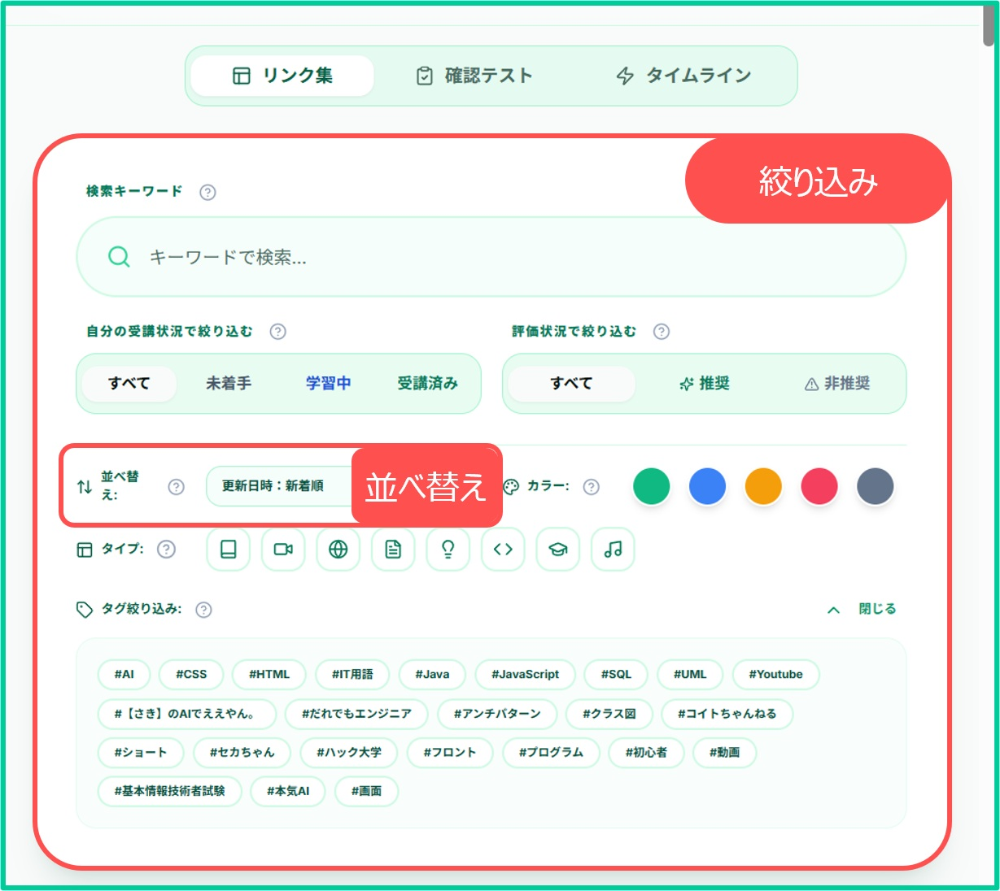
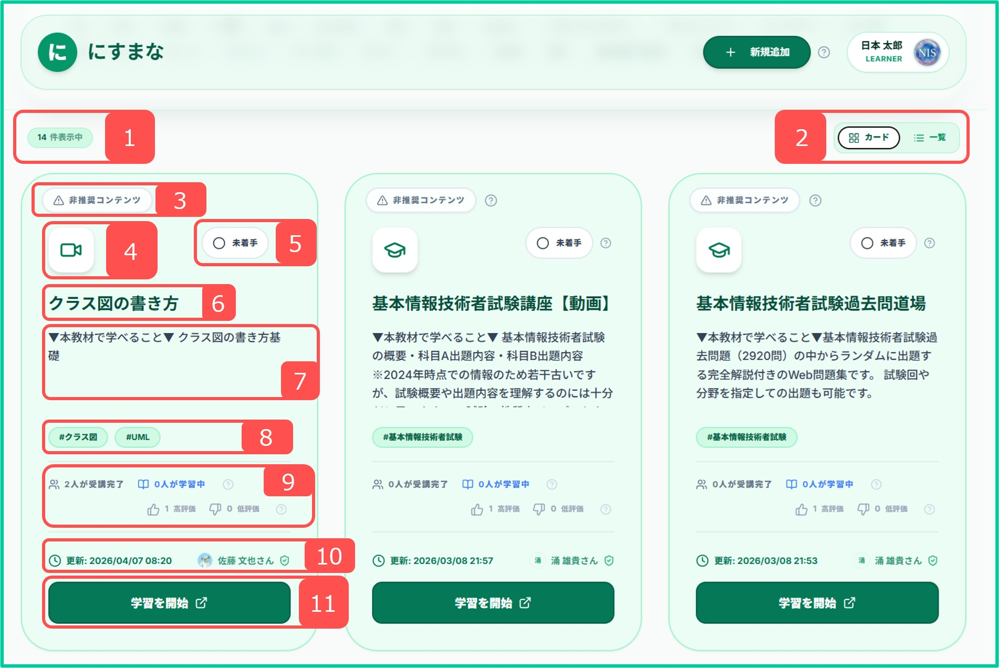
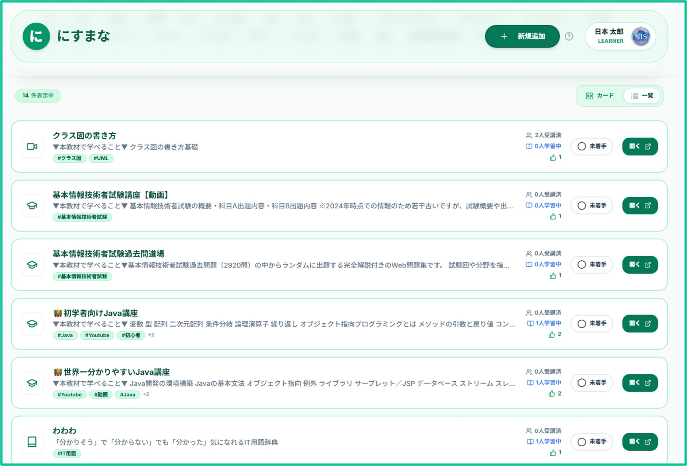
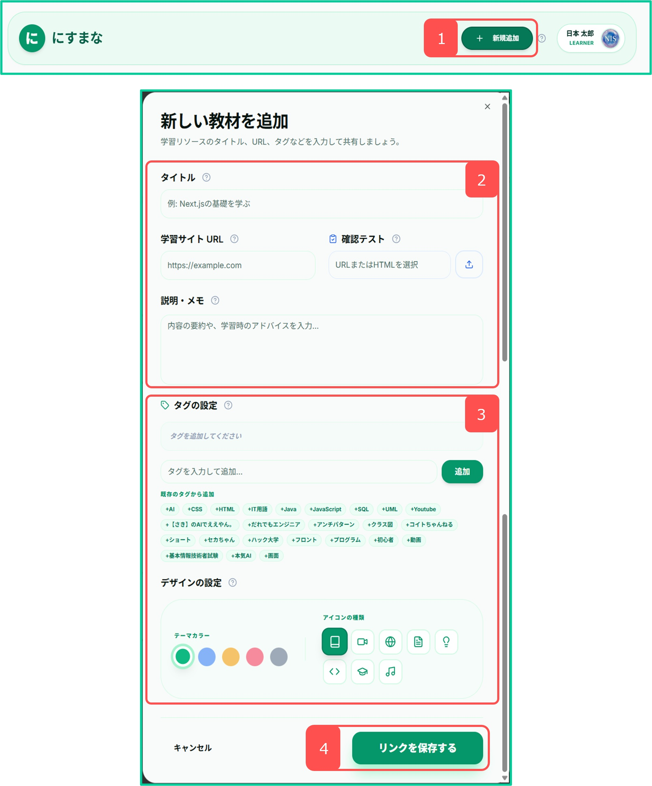

「にすまな」とは？
「にすまな」は、ネット上に溢れている優れた学習コンテンツ（動画・記事・WEBサイト）を持ち寄り、全社員で共有し合う社内教育プラットフォームです。
自作の教材を用意しなくても、Web上の役立つ情報を手軽にシェアし、スキマ時間でスキルアップを目指します。
若手社員の活用ポイント
先輩や同僚が推薦する信頼できる教材を探し、効率よく知識を身に付ける「学びの場」として活用できます。
ベテラン社員の活用ポイント
業務で役に立った参考リンクや解説動画を登録し、ノウハウを社内に還元する「教え合いの場」として活用できます。
ログイン手順
- ログイン画面を開きます。
- 「メールアドレス」欄に社内メールアドレスを入力します。
- 「パスワード」欄にパスワード（初期：nisnis）を入力します。
- 「ログイン」ボタンを押してログインします。
画面イメージ：ログイン画面

プロフィール設定
画面最上部右側のアイコンをクリックすると、プロフィール設定が行えます。
プロフィール設定では、以下の設定が可能です。
- アイコン画像の設定（500KB以内）
- 氏名の変更
- パスワードの変更
画面イメージ：プロフィール設定

教材（リンク）を探す・絞り込む
「リンク集」タブでは、多彩な条件で教材を絞り込み/ソートできます。
画面イメージ：絞り込み/並べ替え

教材の確認・学習の開始
リンク集の中から、興味のあるものを探してください。
画面イメージ：リンク集の見方

- フィルタリングの結果、表示されているリンクの件数。
- リンクの表示切替ボタン。
- リンクの推奨／非推奨。一定数の高評価がつくと推奨コンテンツに昇格します。ただし、低評価が多い場合は昇格しません。
- リンクのタイプ。
- リンクの学習ステータス。（自分で変更します。）
- リンクのタイトル。
- リンクの説明。
- リンクに設定されたタグ。
- リンクの学習／評価状況集計。
- リンク先に遷移するボタン。
画面イメージ：一覧表示

新しい教材（リンク）の追加
役に立つWEBサイトや動画を見つけたら、社内に共有しましょう。
- 画面上部の 「＋ 新規追加」 ボタンをクリックします。
- タイトル、学習サイトのURL、説明・メモを入力します。（あれば確認テストも。）
- カテゴリタグを選択または新規追加し、テーマカラーやアイコンを設定します。
- 「リンクを保存する」 を押すと共有が完了します。
画面イメージ：リンク追加画面

その他の機能
確認テスト
受講済み（完了）ステータスになった教材の確認テストをいつでも受けることができます。理解度のチェックにご活用ください。
タイムライン
全社員の最新のログイン履歴や学習状況がリアルタイムで流れます。他のメンバーの学習アクティビティを刺激として活用できます。